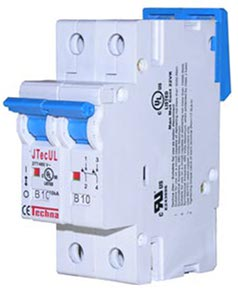

Table of contents
Quick answer What counts as wiring & protection Typical cost ranges What drives the cost Common mistakes FAQ
Quick answer: why this category changes the budget
Panels and batteries are easy to price. Wiring and protection costs vary because they depend on current, distance, voltage, and the inverter’s peak draw. The more power you run, the more important safe protection becomes.
If you’re building a full budget, start here: solar system cost breakdown.
What counts as “wiring and protection” (plain language)
- Cable: PV wire, battery cable, lugs, connectors, conduit where needed
- Protection: fuses, breakers, disconnect switches, surge protection (where used)
- Power distribution: bus bars, combiner boxes, grounding/bonding hardware
This is also where the safest systems spend money. If you’re tempted to “cut cost” here, you’re usually trading away reliability and safety.
Typical cost ranges (by category)
| Category | Typical range | Notes |
|---|---|---|
| Cables + connectors | $100–$800+ | Higher current and longer runs cost more |
| Breakers/fuses/disconnects | $80–$600+ | Depends on voltage and amperage ratings |
| Combiner/bus bars/grounding | $60–$600+ | More strings and higher power increase needs |

{kind=link}
What drives solar wiring cost the most
1) Current draw (amps)
Higher power at lower voltage means higher current. High current pushes you toward thicker cables and higher-rated protection devices.
12V vs 24V vs 48V systems How to choose system voltage
2) Distance and voltage drop constraints
Long runs often require thicker cable to keep voltage drop under control, especially on the battery-to-inverter side.
Battery cable size for inverters (avoid voltage sag) Solar wire size (amps + distance)
3) Inverter size and surge behavior
Bigger inverters can force bigger DC-side cables, bus bars, and fusing. This is one reason “oversizing the inverter” increases system cost.
How to size an inverter Solar inverter cost
4) Array configuration (number of strings)
More panel strings can require a combiner box and additional fusing or breakers.
Solar components explained MPPT controller cost Combiner boxes and disconnects (when you need one)
Common wiring mistakes that increase cost later
- Undersizing cable: heat and voltage drop create performance and safety problems.
- Skipping disconnects: safe maintenance requires proper isolation points.
- Adding capacity without redesign: expansions can trigger a rewiring cycle if not planned.
If you’re building off-grid, you’ll also benefit from sizing-first planning: how to size a solar system.
FAQ
Why is solar wiring so expensive?
Because safe wiring is sized to current and distance, and protection devices must match the voltage and amperage of the system.
How can I reduce wiring cost safely?
Plan layout to minimize long high-current runs, and consider higher system voltage where appropriate.
Do I need breakers or fuses?
Protection depends on system design and code requirements, but most safe systems include appropriate fusing/breakers and disconnects.
Does wiring cost matter more off-grid?
Often yes, because battery-to-inverter currents can be high, which drives cable and protection sizing.
Next logical reads
Solar system cost breakdown Cabin solar cost breakdown RV solar cost breakdown Solar components explained Solar wiring decisions (hub) Solar fuse and breaker sizing